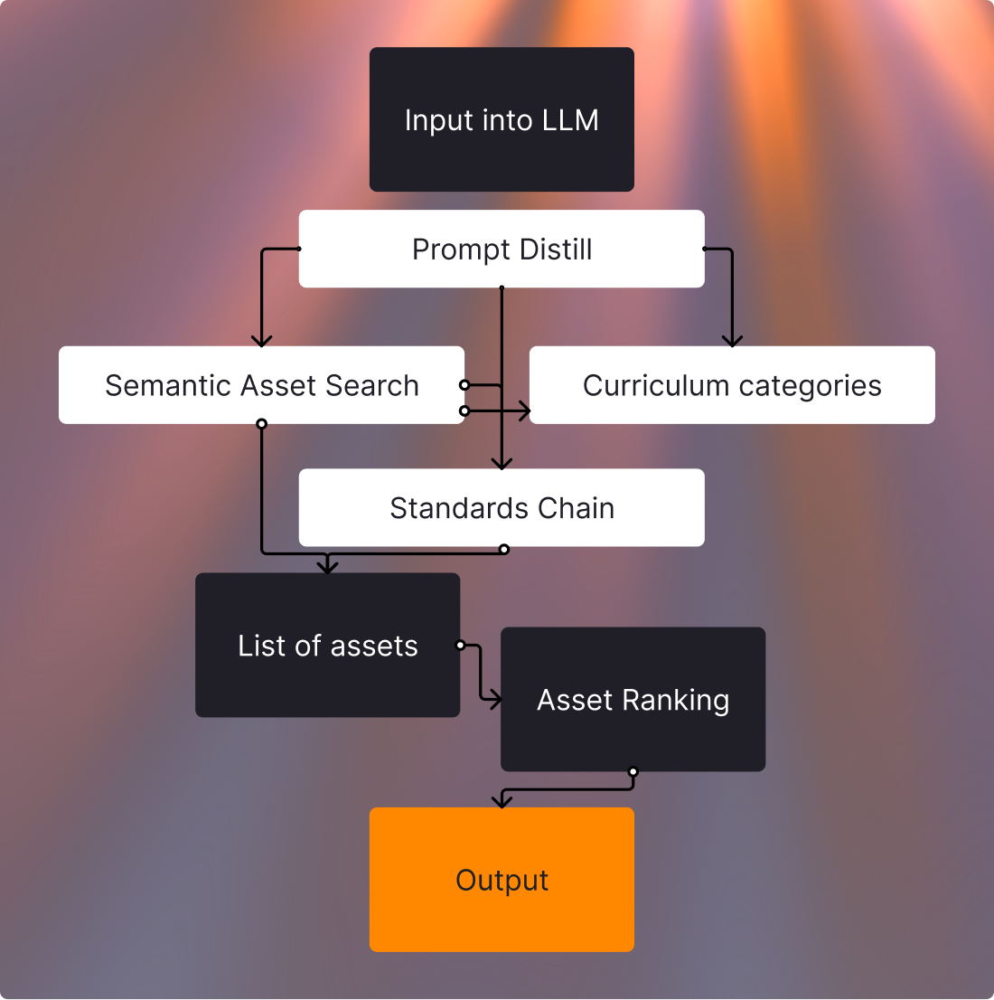

K–12 teachers spend an average of 5-7 hours/week on lesson planning. According to my wife (a very talented high school teacher), the most tedious part of the process is finding supplemental resources; the perfect video, an additional image that hammers a point, a short quiz to fill the time. Our existing tool required manually sifting through over 6 million assets, that when searched, often provided little value, duplicated resources, or irrelevant results.
- Our current search did not understand grade level, subject, or individual teacher needs
- Teachers did not need 6 million assets; they needed 3-4 relevant, high-quality resources
- Even when a relevant asset was found, you still had to manually integrate it into your lesson plan
Additionally, over 97% of our teachers primarily use our products as additive instructional tools rather than an entire curriculum.
Our main function is search, often embedded within other tools like Google Classroom.
My goals with this product was to rebuild trust in our search functionality, and provide a more intuitive and efficient way for teachers to find the resources they need.
Opportunity: Context-aware AI, that could save time and frustration.

simplified LLM asset retrieval workflow